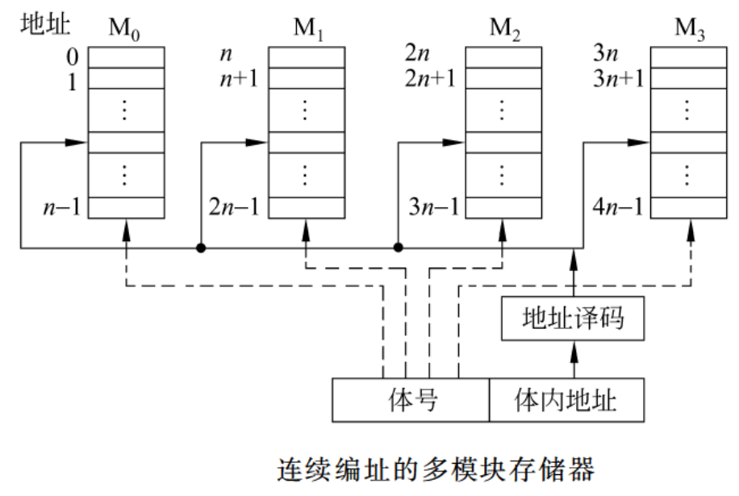
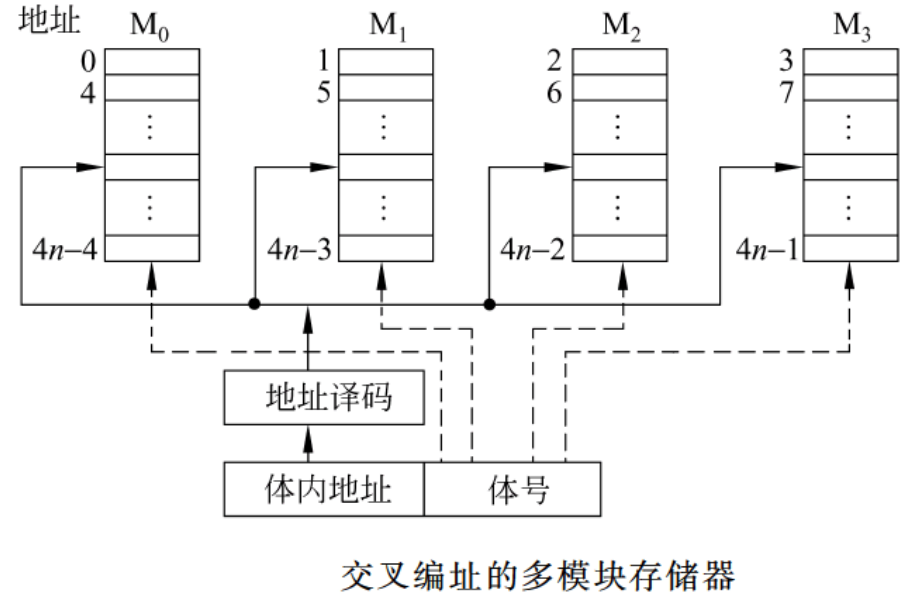
当单个存储芯片的字数（存储单元数）或字长（每个存储单元的位数）无法满足实际需求时，需要在位和字两个方向进行扩展。
核心公式
适用场景
当存储芯片的数据位宽 < CPU 数据总线宽度时，需要位扩展。
目的：增加每个存储单元的位数（加宽字长），地址空间大小不变。
连接方式
信号线 | 连接方式 |
地址线 | 所有芯片并联，接到系统地址总线的低位 |
片选线（CS） | 所有芯片并联，同时选中，共同工作 |
读写控制线 | 所有芯片并联 |
数据线 | 各芯片单独引出，分别连接 CPU 数据总线的不同位 |
核心特征：所有芯片同时工作，共同提供一个完整的字。
示例：用 4 片 4K×1位 的 SRAM 芯片，构成 4K×4 位 的存储器。
分析：
连接方案：
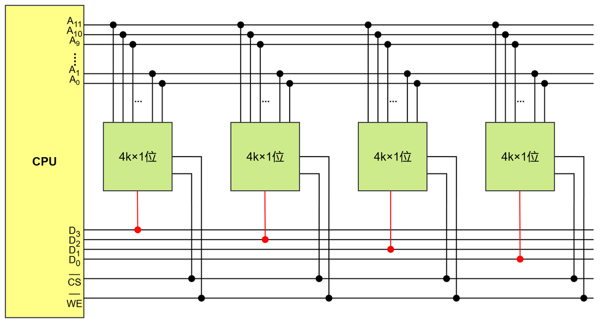
适用场景
当存储芯片的字数 < 目标存储器的字数时，需要字扩展（位宽已满足要求）。
目的：增加地址空间，每个存储单元的位数不变。
连接方式
信号线 | 连接方式 |
地址线低位 | 所有芯片并联，接系统地址总线低位（用于片内寻址） |
地址线高位 | 接译码器（或直接接片选），用于片间选择 |
数据线 | 所有芯片并联，接数据总线 |
读写控制线 | 所有芯片并联 |
片选线 CS | 各芯片独立，由高位地址译码后分别控制 |
核心特征：各芯片分时工作，同一时刻只有一片被选中。
原理： 取用于字选之外的高位地址线，直接连接到各芯片的片选端 CS。
规定：某根高位地址线为 0 时，选中对应芯片；其余位必须为 1（否则多片同时被选）。
优点： 不需要译码器，电路简单。
缺点： 地址空间不连续（有浪费），片选线必须满足"每次只有一位有效"，造成地址资源浪费。
示例（线选法字扩展）
用 4片 8K×8位 的 SRAM 芯片，组成 32K×8位 的存储器，采用线选法。
分析：
连接方案：
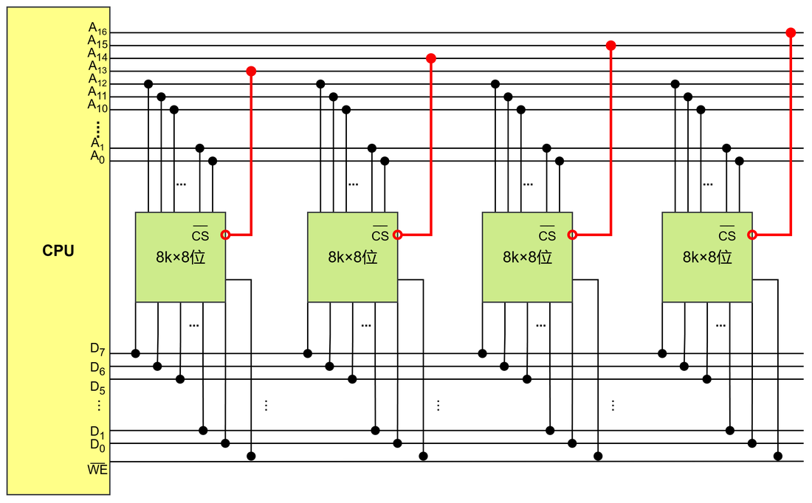
CPU 地址线
├─ A₀～A12（低 13 位）──── 4片芯片地址引脚（全部并联）
└─ 高位 A₁₃、A₁₄、A₁₅、A₁₆ 分别直接接 4 片芯片的 CS 端
A₁₃=0 时选第1片；A₁₄=0 时选第2片；A₁₅=0 时选第3片；A₁₆=0 时选第4片
（同一时刻片选线只能有一根为低电平）
各芯片地址分配：
芯片 | 最低地址 | 最高地址 |
第1片（A₁₃=0，其余=1） | 1110 0 0000 0000 0000 | 1110 1 1111 1111 1111 |
第2片（A₁₄=0，其余=1） | 1101 0 0000 0000 0000 | 1101 1 1111 1111 1111 |
第3片（A₁₅=0，其余=1） | 1011 0 0000 0000 0000 | 1011 1 1111 1111 1111 |
第4片（A₁₆ =0，其余=1） | 0111 0 0000 0000 0000 | 0111 1 1111 1111 1111 |
可见地址不连续，存在大量空洞，地址资源浪费严重。
原理： 将高位地址线输入地址译码器，由译码器产生片选信号，分别连接各芯片的 CS 端。
n位高位地址 → n-2ⁿ译码器 → 2ⁿ个片选信号，充分利用地址空间
优点： 地址空间连续，充分利用地址资源
缺点： 需要译码器，电路略复杂
示例：用 4片 8K×8位 的 SRAM 芯片，组成 32K×8位 的存储器，采用译码片选法。
分析：
连接方案：
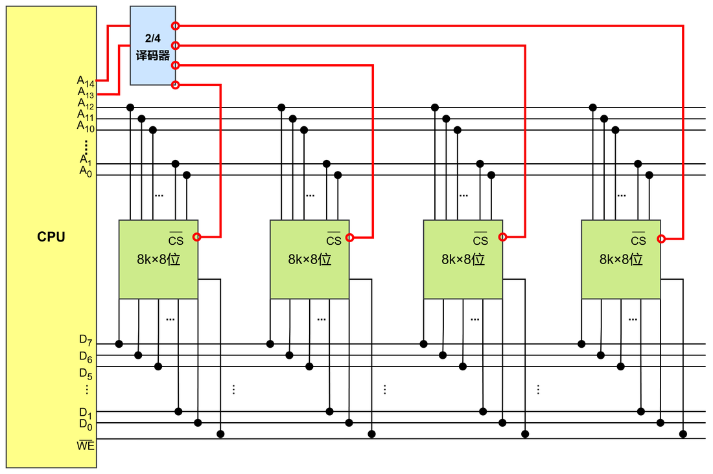
CPU 地址线
├─A₀～A12（低 13 位）──── 4片芯片地址引脚（全部并联，片内寻址）
└─ A₁₃、A₁₄（高2位）──→ 2-4 译码器输入
├─ 输出0（A₁₄A₁₃=00）──→ 第1片 CS
├─ 输出1（A₁₄A₁₃=01）──→ 第2片 CS
├─ 输出2（A₁₄A₁₃=10）──→ 第3片 CS
└─ 输出3（A₁₄A₁₃=11）──→ 第4片 CS
CPU 数据线 D₀～D₇ ──── 4片芯片数据线（全部并联）
CPU WE ──────────── 4片芯片 WE（全部并联）
各芯片地址分配（地址连续）：
芯片 | A₁₄A₁₃ | 最低地址 | 最高地址 |
第1片 | 00 | 000 0000 0000 0000 | 001 1111 1111 1111 |
第2片 | 01 | 010 0000 0000 0000 | 011 1111 1111 1111 |
第3片 | 10 | 100 0000 0000 0000 | 101 1111 1111 1111 |
第4片 | 11 | 110 0000 0000 0000 | 111 1111 1111 1111 |
低13 位决定片内地址，高2位决定选哪片，地址连续无浪费。
对比维度 | 线选法 | 译码片选法 |
是否需要译码器 | 不需要 | 需要 |
电路复杂度 | 简单 | 略复杂 |
地址空间 | 不连续，存在空洞 | 连续，充分利用 |
片选线要求 | 每次只有一位有效（低电平） | 无特殊要求 |
适用场景 | 芯片数少、容量小的场合 | 大容量、地址要求连续的场合 |
适用场景
当存储芯片的字数和字长都不满足要求时，需要同时进行位扩展和字扩展。
连接思路（两步走）
第一步：先按【位扩展】将若干芯片组成一个"逻辑组"，满足数据位宽要求
↓
第二步：再按【字扩展（译码片选）】将多个"逻辑组"连接，满足地址空间要求各"逻辑组"内部： 芯片地址线、片选线、控制线并联，数据线独立引出（位扩展特征）
各"逻辑组"之间： 片选线由高位地址译码后各自控制，同一时刻只有一组工作（字扩展特征）
示例：用 8片 8K×4位 的 RAM 芯片，构成 32K×8位 的存储器。
分析：
连接方案：
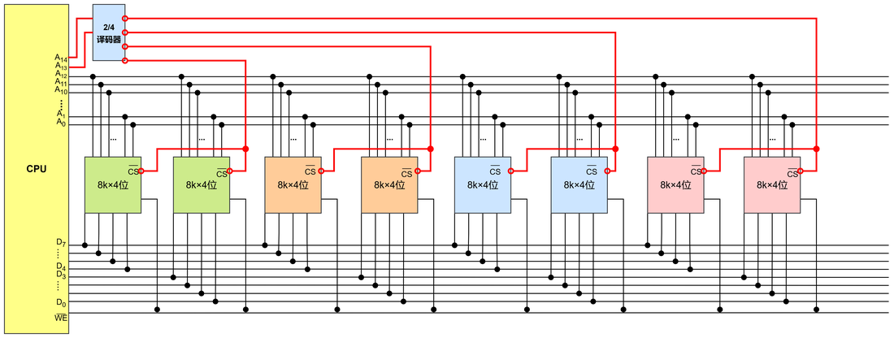
组内（位扩展）：
芯片①②为第1组 → 地址线、片选CS、WE 并联；
芯片① D₀～D₃ 接 CPU D₀～D₃
芯片② D₀～D₃ 接 CPU D₄～D₇
组间（字扩展，译码片选）：
CPU 高位地址 A₁₃ 、A₁₄ ──→ 2-4 译码器
输出0 ──→ 第1组（芯片①②）CS
输出1 ──→ 第2组（芯片③④）CS
输出2 ──→ 第3组（芯片⑤⑥）CS
输出3 ──→ 第4组（芯片⑦⑧）CS
CPU 低位地址 A₀～A12 ──→ 所有芯片地址引脚（全部并联）
CPU WE ──────────────→ 所有芯片 WE（全部并联）
各组地址分配：
组别 | A₁₄A₁₃ | 地址范围（十六进制） | 最低地址 | 最高地址 |
第0组（芯片①②） | 00 | 0000H ～ 1FFFH | 000 0000 0000 0000 | 001 1111 1111 1111 |
第1组（芯片③④） | 01 | 2000H ～ 3FFFH | 010 0000 0000 0000 | 011 1111 1111 1111 |
第2组（芯片⑤⑥） | 10 | 4000H ～ 5FFFH | 100 0000 0000 0000 | 101 1111 1111 1111 |
第3组（芯片⑦⑧） | 11 | 6000H ～ 7FFFH | 110 0000 0000 0000 | 111 1111 1111 1111 |
扩展方式 | 解决的问题 | 数据线 | 地址线低位 | 地址线高位 | 片选线 | 各芯片工作时序 |
位扩展 | 数据位宽不够 | 各自独立引出 | 全部并联 | 全部并联 | 全部并联 | 同时工作 |
字扩展 | 地址空间不够 | 全部并联 | 全部并联 | 接译码器 | 各自独立（由译码器控制） | 分时工作 |
字位同时扩展 | 两者都不够 | 组内并联，按位独立 | 全部并联 | 接译码器 | 组内并联，组间独立 | 组内同时，组间分时 |
已知：单片芯片规格 M×N bit，目标存储器规格 P×Q bit
Step 1. 计算芯片总数
位扩展片数 = Q ÷ N
字扩展组数 = P ÷ M
总片数 = 位扩展片数 × 字扩展组数
Step 2. 确定地址线分配
片内地址线根数 = log₂M（接芯片低位地址引脚）
片选译码所需位数 = log₂(字扩展组数)（接高位地址，送译码器）
CPU总地址线根数 = log₂P
Step 3. 确定数据线分配
每组内各芯片数据线独立引出，拼满 Q 位
Step 4. 片选方式选择
组数较少、地址连续性要求低 → 线选法
组数较多、地址需连续 → 译码片选法（主流）
Step 5. 画连接图
组内：地址/CS/WE 并联，数据线按位独立
组间：低位地址并联，高位地址→译码器→各组CSA. 1、15
B. 2、15
C. 1、30
D. 2、30
答案：D
ROM芯片数：
RAM芯片数：
A. 0000H
B. 0600H
C. 0700H
D. 0800H
答案：D
组织方式分析：
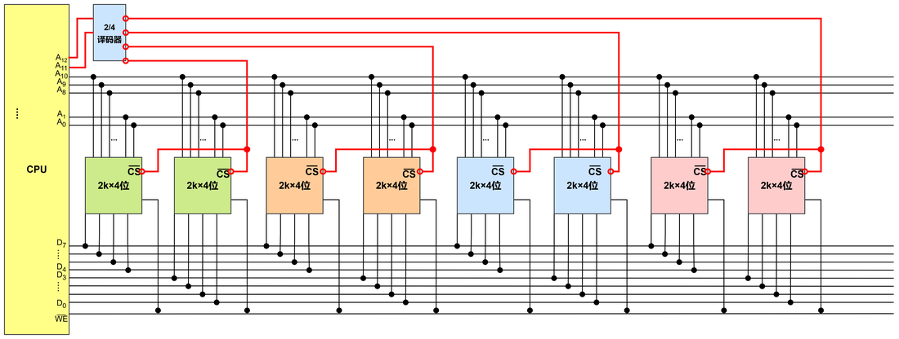
各组地址分配：
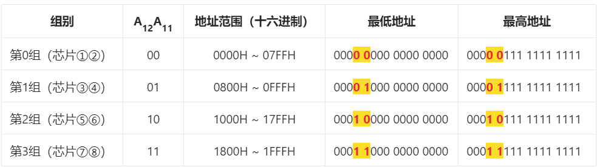
0B1FH 介于 0800H ~ 0FFFH 之间，属于块1，最小地址为 0800H。
或者将0B1F 转换为二进制 0000 1011 0001 1111，属于第二组，该地址所在芯片的最小地址即为0000 1000 0000 0000=0800H
A. 22位
B. 23位
C. 25位
D. 26位
答案：D（26位）
MAR 的位数取决于主存地址空间大小，与实际安装容量无关。
注意：题目说"主存地址空间大小为64MB"，这决定了MAR位数；实际安装32MB只影响芯片数量计算，与MAR无关。
A. 7
B. 8
C. 14
D. 16
答案：C
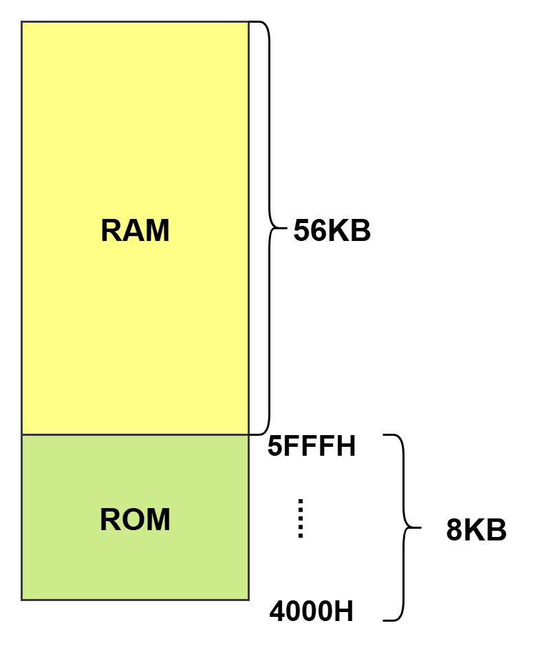
ROM区： 4000H ~ 5FFFH = 8KB
RAM区： 64KB - 8KB = 56KB
使用 8K×4位 SRAM 芯片：
A. 8
B. 16
C. 32
D. 64
答案：C（32片）
RAM区容量计算：
所需芯片数：
（也可分解：位扩展 32÷8 = 4片/组，字扩展 16MB÷2MB = 8组，共32片）
A. 00000000H~0FFFFFFFH
B. 10000000H~2FFFFFFFH
C. 30000000H~3FFFFFFFH
D. 40000000H~4FFFFFFFH
答案：C
地址空间总大小：
按 RAM:ROM = 3:1 分配：
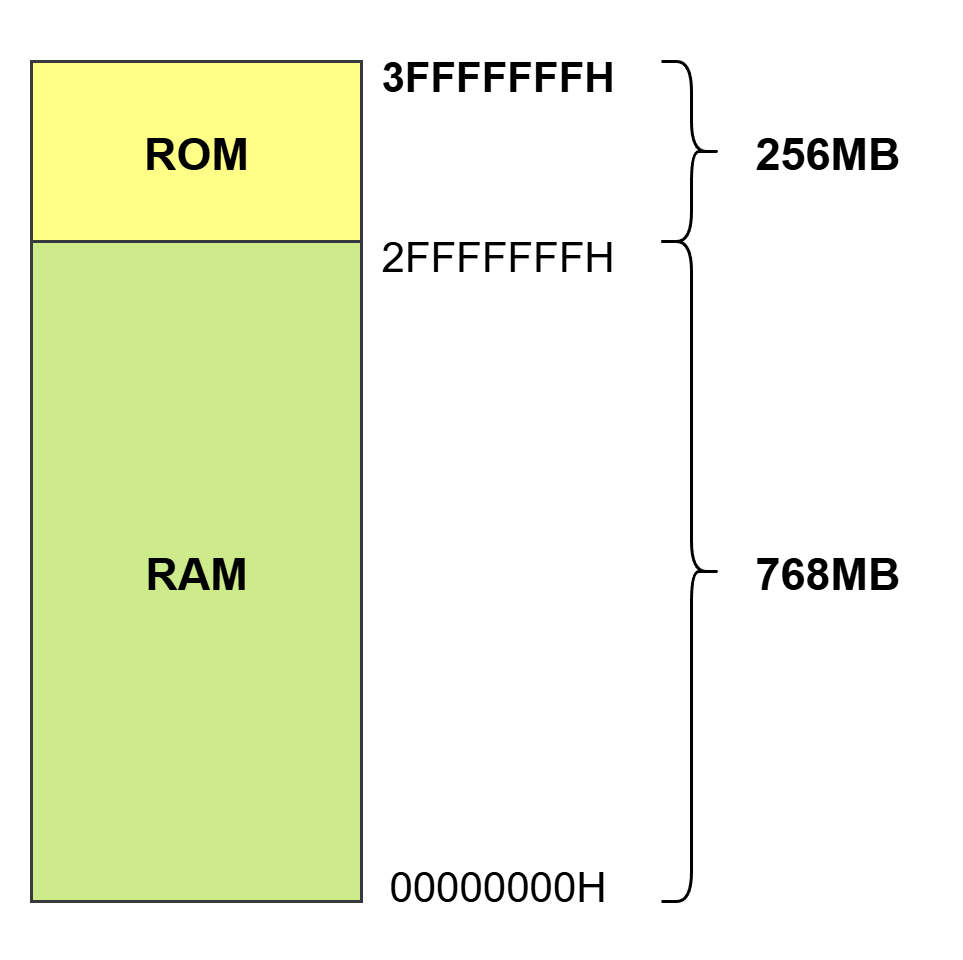
7. （袁书配套习题）假定用若干 位的存储器芯片组成一个 位的存储器，芯片内各单元连续编址，则地址 所在的芯片的最小地址为（ ）。
A.
B.
C.
D.
答案： C
目标存储器容量为 ，单片存储器容量为 ，因此需要进行字扩展，共需要分为 个组。连续编址（又称高位交叉编址、顺序编址）是指数据连续存放在同一个芯片中，存满一个芯片后再存入下一个芯片。因此每个芯片(组)的片选信号由最高两位地址确定，低 14 位为片内地址。
给定的地址 落在 之间，因此它位于第2组芯片内。 第2组芯片的最小地址（起始地址）即为 。
答案： D
字扩展组成 个芯片组。 交叉编址（又称低位交叉编址）是指连续的地址分布在相邻的不同芯片中。因为有4个芯片组，所以地址的最低2位（）用来作为芯片的片选信号。
确定各芯片的地址特征：
给定地址 。将其转换为二进制，最后半字节 的二进制是 1111，其最低两位是 11（即十进制的3）。 该地址位于芯片3中。芯片3内的最小地址（即第一个分给它的地址）是 。
答案： B
解析：
答案：A
 开始的低地址段：。
开始的低地址段：。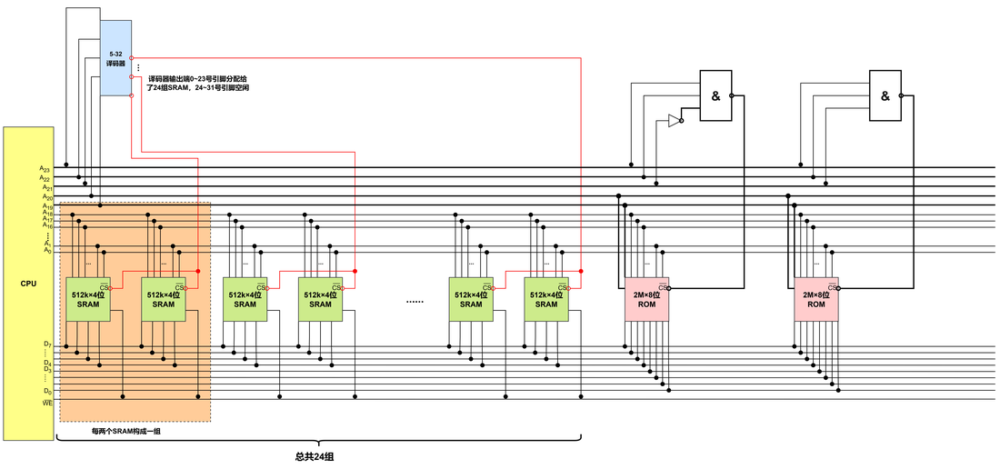
因此将地址 转化为 0000 1010 0001 0010 0011 0100，001 用于生成该 sram 芯片的片选信号，因此 该地址所在的 RAM 芯片的最小地址为 0000 1000 0000 0000 0000 0000 即
这张原理图的解释：
- SRAM的字位扩展：
- 位扩展： 橙色框内将两片 位的 SRAM 组合，数据线分别接 和 ，凑成了 8 位位宽。
- 地址分配： 内部地址线 （共19根，对应 容量），并行接到了所有 SRAM 上。
- 字扩展译码： 5-32 译码器准确接入了最高 5 位地址线（），并且利用其 0~23 号输出端精准控制 24 组 SRAM，24~31 号引脚悬空闲置
- ROM的单独逻辑控制：
- 地址线 （共21根，对应 容量）并行接到了两片 ROM 上。
- ROM 1片选： 采用了三输入与非门，输入端精准接入 、，并且在 上加了一个非门（反相器）。这完美实现了 的高位地址匹配，输出低电平激活 ROM 1。
- ROM 2片选： 同样采用三输入与非门，直接接入 、、，完美实现了 的高位地址匹配，输出低电平激活 ROM 2。
因为题目要求 ROM 在最高连续地址段，总共占据 （）：
ROM 片 1 ()： 地址范围是 C00000H ~ DFFFFFH。转换成二进制，高三位 固定为 1 1 0。
ROM 片 2 ()： 地址范围是 E00000H ~ FFFFFFH。转换成二进制，高三位 固定为 1 1 1。
因此直接用地址总线的最高几位通过简单的逻辑门来生成片选信号：提取 CPU 的 三根线。
选 ROM 1： 当且仅当 时有效。我们需要把 反相变成 1，然后把三个 1 放在一起产生一个 0。布尔表达式：所需器件： 1个非门（处理 ） + 1个三输入与非门。
选 ROM 2： 当且仅当 时有效。三个输入已经是 1 了，放在一起直接产生 0。布尔表达式：所需器件： 1个三输入与非门。
答案：B
00 的地址；组 1 处理末两位为 01 的地址；组 2 处理末两位为 10 的地址；组 3 处理末两位为 11 的地址。1101，其最低两位是 01。这说明它属于组 1。1111，最低两比特为 11，属于组 3的最后一个地址。
答案：C
CPU 的速度远快于主存，单模块存储器存在严重的速度瓶颈。多模块存储器是一种空间并行技术，利用多个结构完全相同的存储模块并行工作，来提高存储器的吞吐率，而不改变单个模块的存取速度。
地址结构： [高位：模块号] [低位：模块内地址]
特点：
由于程序具有局部性和连续性的特点，执行过程中的指令和数据基本分布在同一个存储体中，往往会导致一个存储体访问频繁，而其他存储体基本处于空闲状态，无法实现多个存储体的并行工作。
用途： 典型的顺序编址模式，用于容量扩展。
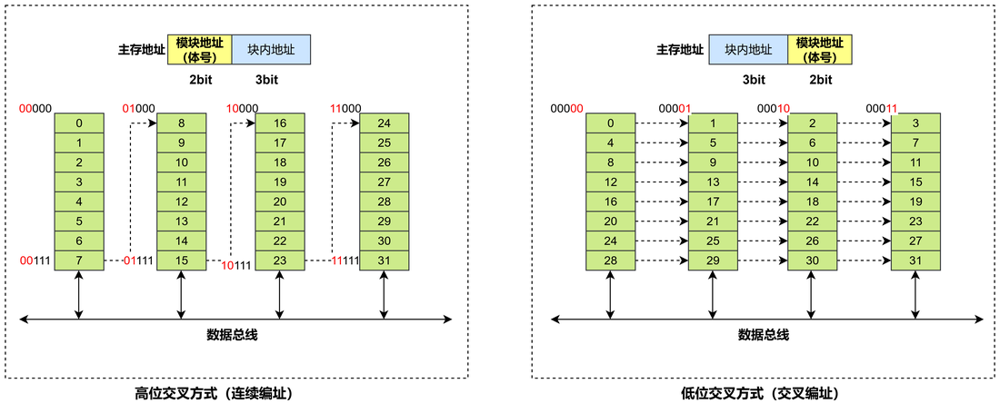
地址结构： [高位：模块内地址] [低位：模块号（体号）]
判断体号的公式：
特点：
低位交叉存储器适合突发的顺序访问模式，这也正是带 cache 的主存系统中 DRAM 内存的 访问模式。内存条中的 SDRAM 芯片中以及多通道内存中普遍采用了交叉编址技术。


在此之前我们先了解一下 CPU 访存（读取一个数据）的三个阶段：
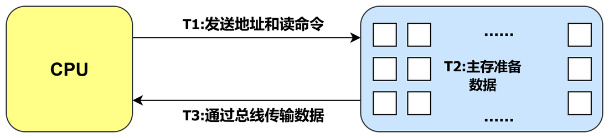
这里的 即为存取时间 （或读出时间，定义为从存储器接收到有效的地址和读命令开始，直到从存储介质中将数据读出，并稳定地送到存储器的数据总线上为止的时间），因此 CPU 进行一次数据读取耗费的时间为;
但是真题和各大教材在讨论该类问题时，都不会给出存取时间，而只会给出存储周期
。我们知道存储周期的定义为存储器进行两次独立的、连续的存取操作之间所需的最小时间间隔，，
被称为恢复时间。因此按照教材和真题的逻辑，我们可以将存储周期中的恢复时间省略掉，认为存储周期≈ 存取时间，主存在经过一个完整的存储周期后数据才送到数据线上，在这之后才能传输数据。
【2013-43】(9分)某32位计算机，CPU主频为800MHz，Cache命中时的CPI为4，Cache块大小为32字节；主存采用8体交叉存储方式，每个体的存储字长为32位、存储周期是40ns；存储器总线宽度为32位，总线时钟频率为200MHz，支持突发传送总线事务。每次读突发传送总线事务的过程包括：送首地址和命令、存储器准备数据、传送数据。每次突发传送32字节，传送地址或者32位数据均需要一个总线时钟周期。请回答下列问题，要求给出理由或者计算过程。
(3) 存储器总线完成一次读突发传送总线事务所需的时间是多少？
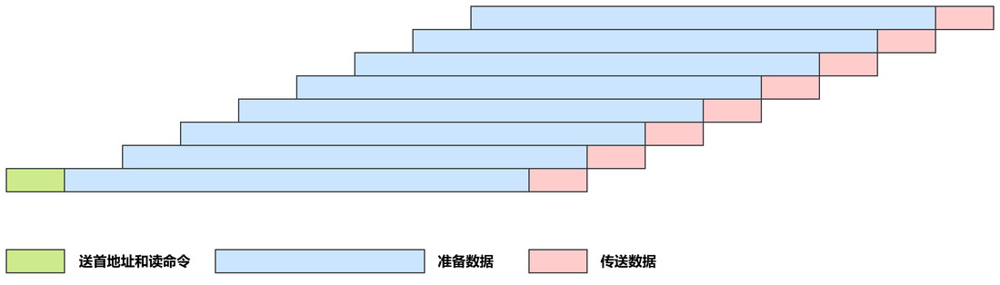
- 阶段一送首地址和命令：题目已知传送地址需1个总线时钟周期，耗时 5ns。
- 阶段二存储器准备数据： 注意，这里的“准备数据”是指准备第一个数据。题目已知每个体的存储周期是 40ns，所以准备第一个数据耗时 40ns。
- 阶段三传送数据：这里完美体现了低位交叉存储器的流水线优势。单次突发传送32字节，而总线宽度是4字节（32位），所以总共需要传送 32B / 4B = 8次 数据。因为主存采用了8体交叉存储，且流水线时间间隔 刚好等于总线周期（5ns），满足 （40ns = 8 5ns）的无缝流水线条件。这意味着第一个体准备好数据后，后续的7个体会以5ns的间隔依次将数据准备好送上总线，无需再等待额外的潜伏期。所以，传送这8个数据需要8个总线时钟周期，耗时 8 5ns = 40ns。
总耗时 = 5ns (送地址) + 40ns (准备首数据) + 40ns (传送8个数据) = 85ns
如果 在这道题里面 认为存储周期 > 存取时间，那么传送数据就没必要等到一个存储周期后才开始传送，完全可以在一个存取时间后(主存已经把数据已经送到数据总线上)就可以开始传送数据，但是这道题并没有给存取时间，因此我们只能认为存储周期中的恢复时间被省略掉，存储周期≈ 存取时间。其他书上和真题也可以这样理解，否则无法逻辑自洽。
误区解释：
假设题目条件是主存采用四体低位交叉存储模式，工作时每1/4个存储周期启动一个体，存储周期为 T，总线传输周期为 τ，T=4τ ；图示如下，有的同学便莫名其妙得到了如下错误结论：
- 存储周期T = 4 * 存取周期（认为存取时间 = 总线传输周期），因此存储周期 T(4τ) = 存取时间（τ）+ 恢复时间（3τ）：这是很明显的错误，事实上总线传输周期与存取时间没有任何关系，这里的模型将恢复时间忽略了，因此存取周期在这里等价于存取时间，不需要恢复时间(或者认为它极短可以忽略)；
- 很多同学还会忽略总线传输周期，认为经过一个存储周期（在这里等价于存取时间）CPU 就拿到了数据，事实上，经过一个存储周期 T2 只是把数据送到了数据线而已。
以下面这个例子来讲解两种编址方式下的访存过程，主存分别采用四体连续编址（高位交叉）和低位交叉存储模式，低位交叉工作时每1/4个存储周期启动一个体，存储周期为 T，总线传输周期为 ， ，传送首地址和读命令耗时为 ，传送一次数据耗时为τ。假设按突发传输方式（传送一次地址，后续数据读取不需要传送地址的传送方式）进行连续读取 0~4 的连续 5 个存储单元中存储的存储字 。
假设该模型中的存储器芯片为传统的异步 DRAM 芯片，每一次数据访问都需要经历完整的“行地址”和“列地址”阶段，即从一个存储体中取完一次数据，需要等待一个存储周期后才能再次取数据。
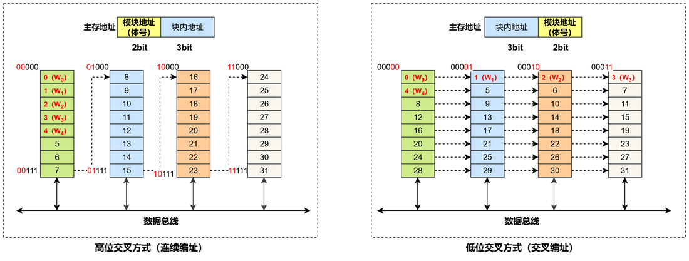
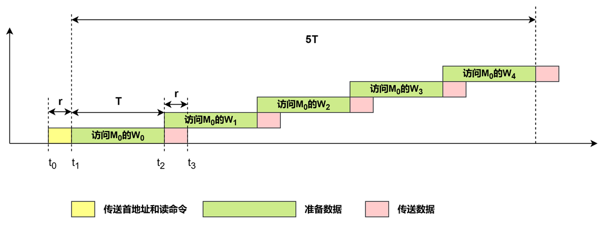
由于高位交叉编址，访问的连续地址单元位于同一个存储体，因此存储器的两次读操作之间间隔 T；如图，t0 时刻 CPU 向主存发送地址和读命令，经过 r 后也就是 t1 时刻存储器启动第一个体，经过时间 T=4r 后，该存储体将数据送到数据线上， 也就是 t2 时刻，此时会同时干两件事，①该存储体继续准备下一个数据，②将数据通过 数据线传送给 CPU；
这里分析的是轮流启动模式
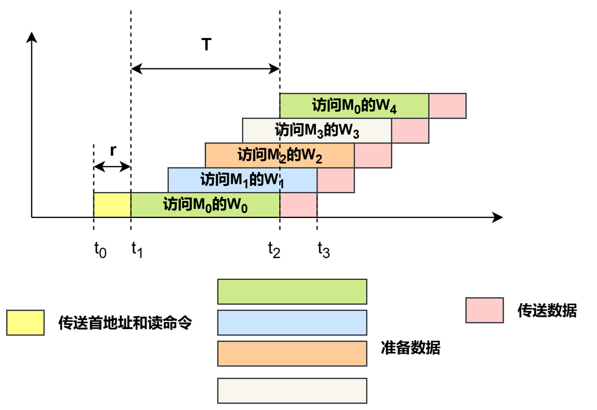
由于低位交叉编址访问连续地址的存储字位于不同的存储体，每个存储体都有独立的读写电路 ，因此可以不用等到一个体准备好数据才开始读取下一个字，各体之间可以并行准备数据。如图，t0 时刻 CPU 向主存发送读命令和地址，经过时间 r 后也就是 t1 时刻启动存储体 M0，之后每间隔 r 启动一个体。t2 时刻 M0 中的数据准备完毕可以通过数据线向 CPU 传送，在这之后每经过一个 r 都有一个数据传送完毕。（这里讨论的前提都是默认存储周期 = 存取时间，即经过一个完整的存储周期后数据才被主存送到数据线上）。
根据该示意图我们可以观察到存储体共花费了 T+4r 的时间准备数据，因此如果连续读取 n 个存储单元（存储字）则存储器需要耗费 T+(n-1)r 的时间准备数据，该阶段可以看成一个流水线，在第一个存储体经过准备时间 T（存储周期） 之后，进入流水线的稳定状态，每经过一个 r 的时间都会读出一个数据。所以说，当流水线稳定时，一个存储周期内存储器可以向 CPU 提供 4 个存储字。
读取这 5 个存储字总耗时为 r(传送首地址和读命令) + [T + (5-1)r](存储器准备数据) + r（传送数据）= 10r;
因此低位交叉存储中，读取 n 个地址连续的存储字总耗时为 r(传送首地址和读命令) + [T + (n-1)r](存储器准备数据) + r（传送数据）
根据上面的分析我们可以得到如下结论，在突发传送的前提下，从存储器中读出 n 个地址连续的存储单元，
- 若采取高位交叉编址（连续编址），则存储器准备好一个数据平均耗时为
- 若采取低位交叉编址，则存储器准备好一个数据平均耗时为，当 时，平均读取一个字的耗时为
（例 1）一个四体并行低位交叉存储器，每个模块的容量是 位，存取周期为 ，总线传送一次数据为 （总线传输周期），在下述说法中，（ ）是正确的。
A. 理想情况下，在 内，存储器能向 CPU 提供 位二进制信息
B. 理想情况下，在 内，存储器能向 CPU 提供 位二进制信息
C. 在 内，每个模块能向 CPU 提供 位二进制信息
D. 以上都不对
答案：B
四体低位交叉， CPU 可以采用流水线的方式连续访问不同的模块。每个模块 位，意味着 CPU 每次访问可以读取或写入 位的数据。在低位交叉存储器的连续访问（稳定流水线状态）下，每经过一个总线传输周期 （），就会有一个存储体完成存取并将数据放到总线上。因此，在 的时间内，存储器可以连续向 CPU 提供 次数据，每次提供的数据量等于一个字长，即 位，总共提供的数据量 = 。所以，B 正确。
选项 C：题目已知每个模块的存取周期 是 。这意味着对于任何一个独立的模块，从接收地址到准备好数据，硬性规定就是需要 的时间。 只是各个模块启动之间的时间差。单个模块绝对不可能在 内独立完成存取。因此，C 错误。
（例 2）某机器采用四体低位交叉存储器，存储周期为 T，总线传输周期为 r，T=4r； 现分别执行下述操作：①读取6个连续地址单元中存放的存储字，重复80次；②读取8个连续地址单元中存放的存储字，重复60次. 则操作 ①、②所花费的时间之比约为()。
A.1:1 B.2:1 C. 4:3 D. 3:4
答案：C
操作 1 在执行第二轮读取6个连续地址单元时，由于 还没有恢复好，因此需要往后延迟 T/2 才能开启下一轮读取操作
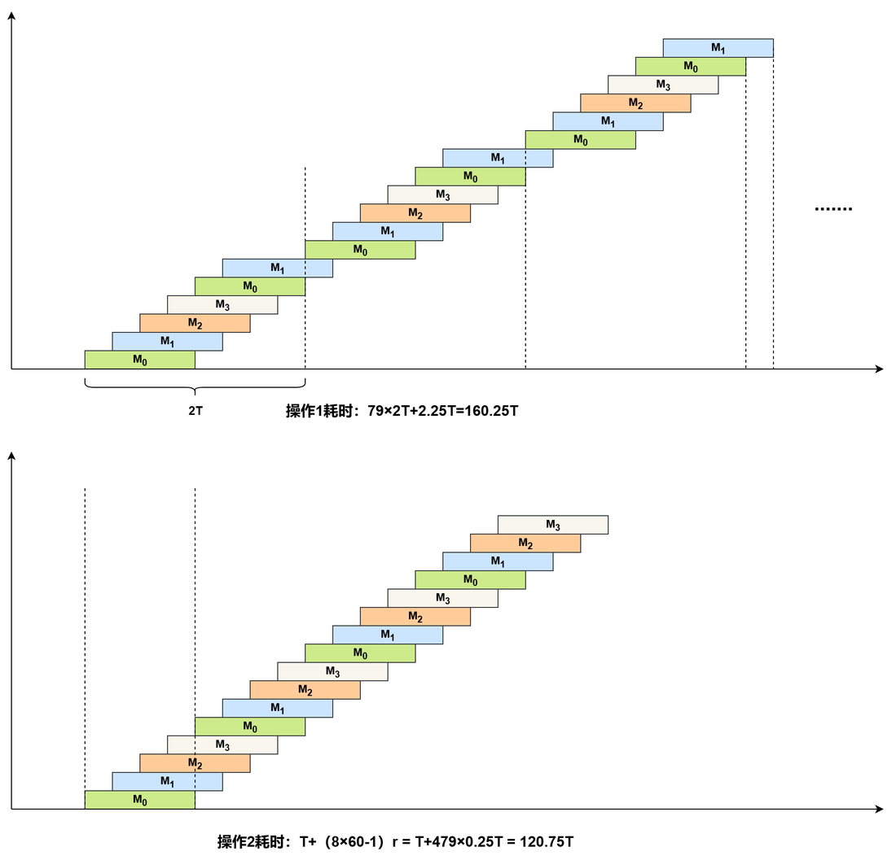
设：存储周期为 T，总线传输周期为 τ，交叉模块数为 m（一般取 2 的幂次方）
条件： 每个存储模块一次读写的位数 = 总线数据位数（即每次只传一个模块的数据）
流水线条件： （每隔 τ 启动下一个模块）
m=4，T=4τ 的低位交叉存储流水示意图
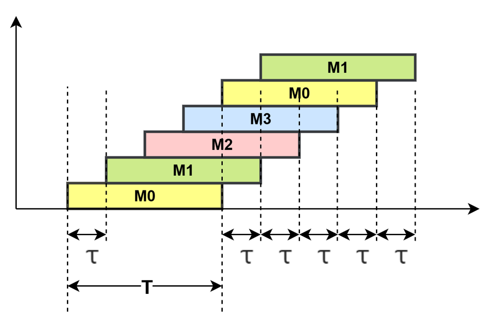
这种方式与突发传送总线事务配合使用，因为突发传输送入一个首地址后，后面连续读的数据都不用送入地址，这和轮流启动的隔一个τ 启动一个体刚好吻合。
性能指标：
条件： 所有模块一次并行读/写的总位数 = 存储器数据总线位数
例如：下图是用8个16M×8位的DRAM芯片扩展构成一个128MB内存条的示意图，按字节编址。每片DRAM芯片中有一个4096×4096×8位的存储阵列，所以，行地址和列地址各12位（212=4096），有8个位平面。
CPU发出的主存地址被拆分为行地址和列地址，通过分时复用方式先后送入DRAM芯片的行、列地址译码器，选中行列交叉处的8位单元进行读/写操作。因此，单个芯片每次传输8位，8个芯片同步工作，可一次性（一个存储周期）提供64位数据，匹配64位总线宽度。
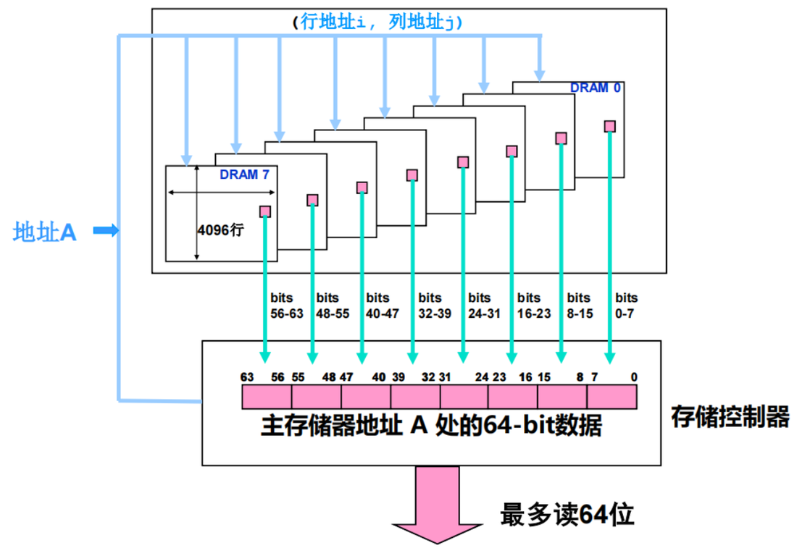
事实上，低位交叉编址的同时启动方式，也可以看做是位扩展，本例中，主存地址为 27 位，高 24 位分别为行、列地址，当需要读取数据时对应主存地址中的高 12 位行地址会同时送到 8 个芯片将对应行的数据送到对应芯片的行缓冲中去，然后再将列地址同时送到 8 个 dram 芯片，这 8 个 dram 芯片同时取出对应列的 8bit 数据送到数据总线组合成 64bit 的数据，之后 CPU 再根据主存地址的低 3bit 去存储控制器中通过译码器从对应的缓冲区按字节取出自己需要的数据。（即访问一次主存取得 8 字节数据（一个存储周期），这 8 个数据的地址字段中高 24 位相同）
通过上面的分析我们可以看到这 8 个芯片的组织方式和位扩展的连接方式是一样的，只不过位扩展这个名称更侧重于存储芯片容量的扩展，多模块交叉编址这个名称侧重于表达这些存储芯片中存储单元的编址方式。
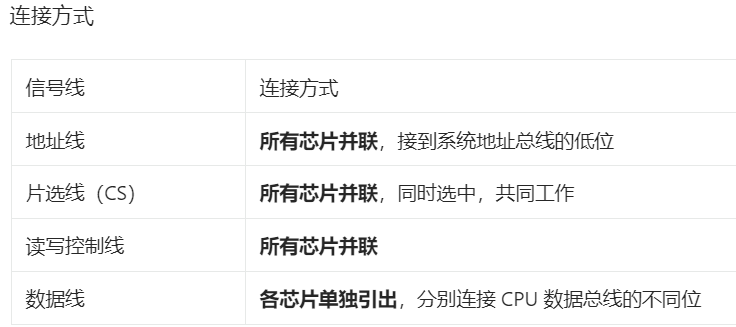
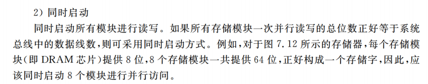
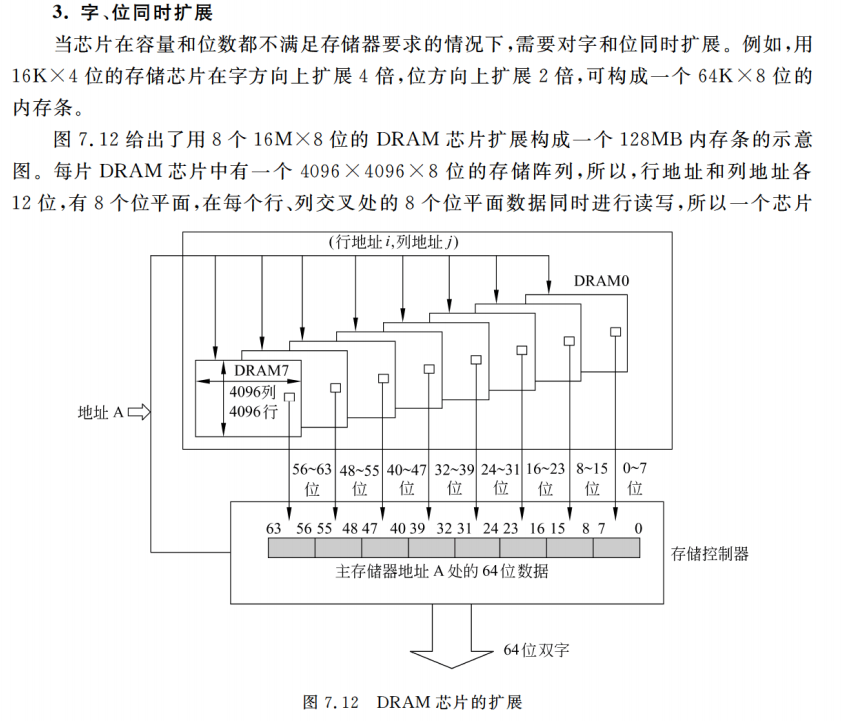
答：分别访问1次和2次，在如上图所示的存储器结构中，同时读出的64位可能是第0 ~7 单元、第8~ 15 单元、……第8k ~ 8k+7单元，以此类推。因此，如果访问的一个int型数据不对齐，假定在第6、7、8、9这四个存储单元中，则需要访问两次存储器；如果数据对齐的话，即起始地址是4的倍数，则只要访问一次即可。这就是数据需要对齐的原因。显然，了解存储器结构可以更好地理解之前提到的数据对齐问题。
不连续，该存储器采用的是低位交叉编址，可同时读写所有芯片。
主存地址27位，片内地址24位，与高24位主存地址相同。主存低三位用来确定8个芯片中的哪个，即用来选片(也可以认为是选择不同的模块)。
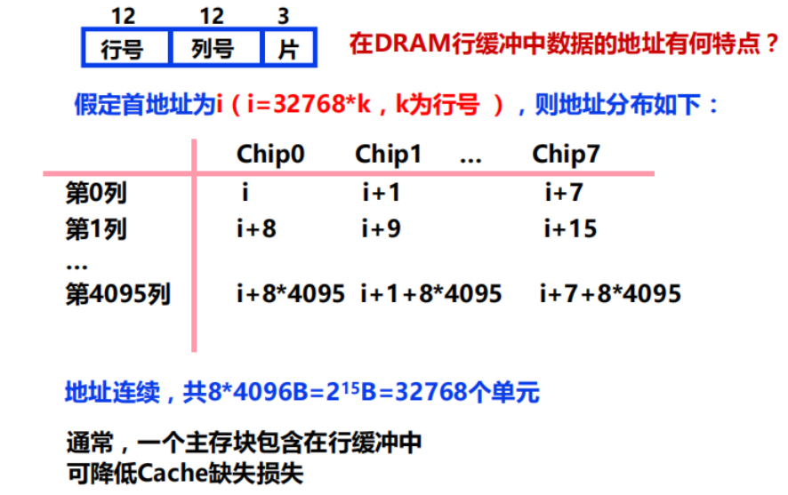
冲突条件： 在 m 体交叉存储器中，若两次连续访问的地址在同一个体，且时间间隔小于存储周期 T（即访问步数差 < m），则发生冲突。
判断方法（步骤）：
无冲突的理想条件： 相邻 m 个访问地址分别属于不同的 m 个体（体号连续不重复）。
A. 8004和8008
B. 8002和8007
C. 8001和8008
D. 8000和8004
答案：D（8000和8004）
4体交叉编址：体号 = 地址 mod 4
8005 mod 4 = 1， 8006 mod 4 = 2，以此类推。由于如果两次连续访问的地址在同一个体，且时间间隔小于存储周期 T（即访问步数差 < m），则发生冲突。这里我们假设存储周期 T=4τ（总线传输周期），每隔一个 τ 的时间启动一个体，按照题目中的访问序列可以还出如下示意图，
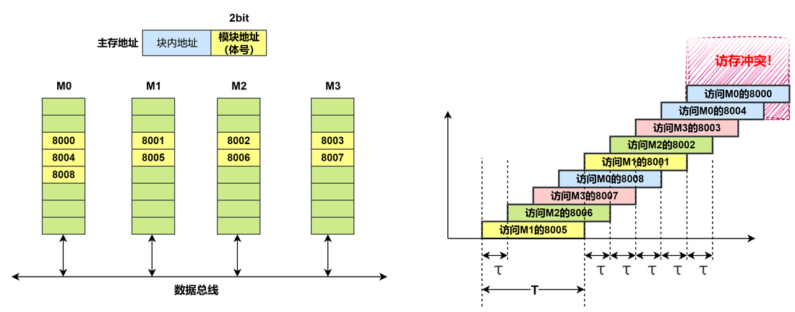
冲突条件： 两次访问同一体，间隔步数 < 4（体未完成存取就再次被访问）
逐项验证选项：
A. 1
B. 2
C. 3
D. 4
答案：C
基本信息：
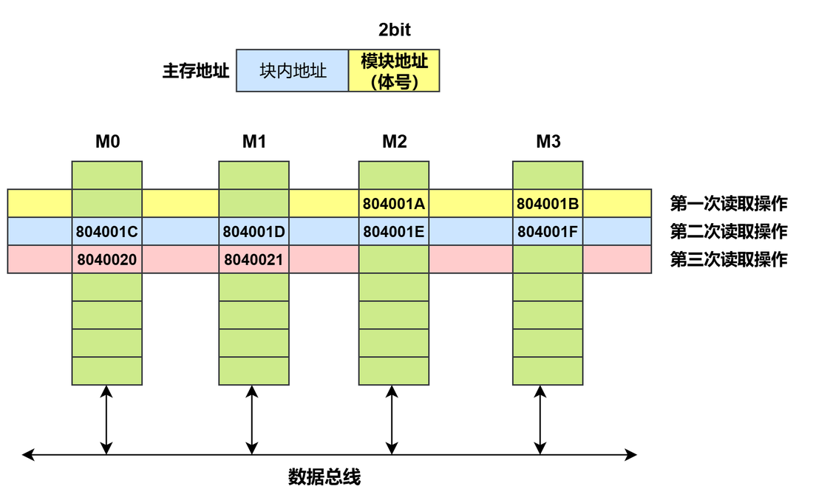
如图，读取 X 需要三次读取操作，因此需要 3 个存储周期。
A. 内存条的容量为512MB
B. 采用多模块交叉编址方式
C. 芯片的地址引脚为26位
D. 芯片内行缓冲有8192×8位
误区 1：认为采用位扩展方式也可以一次性传 64 位数据，所以 B 说法不对。
解释：位扩展属于存储芯片的容量扩展方式，而这里的多模块交叉编址说的是存储单元的编址方式，这里讨论的是该内存条采用交叉编址（注意真题中的多模块交叉编址默认为低位交叉编址）还是连续编址，你跑过来说这是位扩展方式，有点跨频道聊天的意味了， 属于把“单次搬运数据的能力（字长/总线宽度）”和“存储单元门牌号的排列规则（编址方式）”混为一谈，用一个维度的正确事实去否定另一个维度的规则。 事实上，这 8 个 DRAM 芯片的组织形式本来就可以看作为位扩展（原因在同时启动的笔记那里）
误区 2：认为题目说了支持突发传送就一定得是低位交叉编址；
解释：突发传送跟你是交叉编址还是连续编址无关，事实上，单个 DRAM 芯片（SDRAM）就支持突发传送，因为有行缓冲，具体原因可见笔记《 DRAM 芯片的发展》这部分。
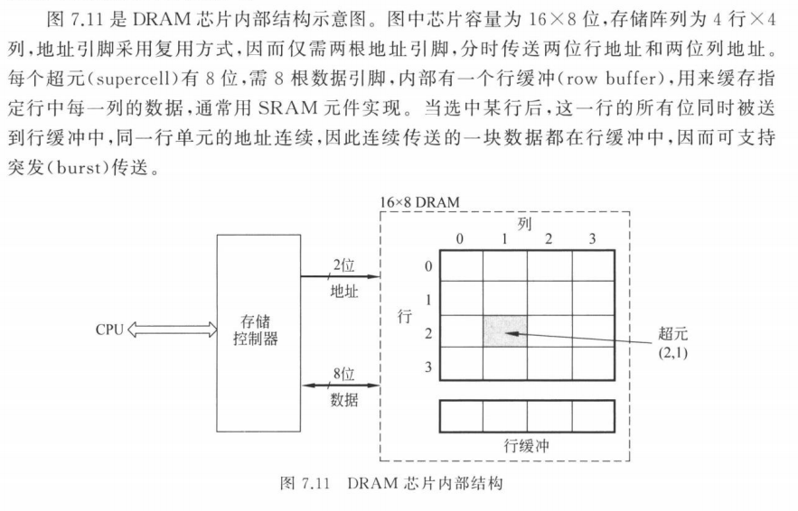
答案：C（不正确的叙述）
每芯片参数： 8192×8192×8位 = 位
A. 采用了高速元器件
B. 各模块有独立的读写电路
C. 采用了信息预读技术
D. 模块内各单元地址连续
答案：B
多模块存储器本质上是一种空间并行技术。为了能够实现多个存储体同时或流水线式的高速读写，其硬件基础就在于各存储模块均具有各自独立的地址寄存器、数据寄存器和读写控制电路。
工作原理：
答案：D
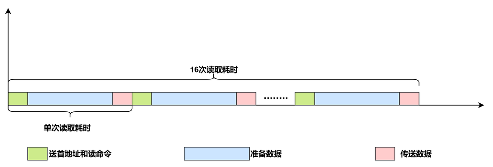
 个时钟周期 个时钟周期
个时钟周期 个时钟周期总耗时： 缺失损失 = 传送次数 单次读取耗时 = 个时钟周期。
答案：C
此题与上一题逻辑完全一致，仅仅改变了总线和存取宽度。
答案：A
这道题引入了多模块交叉编址和突发传送，这是现代计算机真正采用的访存方式，计算模型与前两题有本质区别。
个时钟周期。某计算机主存采用 4 体低位交叉编址结构，且总线和存储器支持突发传送。设总线传输周期为 ，每个存储模块的存取周期 。在程序执行过程中，CPU 依次发出六个主存地址（十进制）的访存请求序列为：8, 17, 21, 12, 31, 28。忽略其他开销，假设第一个请求在第 1 个总线周期发出，则该序列中会发生体冲突的访存地址是（ ）
A. 21 和 12
B. 21 和 28
C. 12 和 28
D. 21、12 和 28
答案：B
第一步，先对所有地址取模（），找出它们的体号序列：
体号序列为：[0, 1, 1, 0, 3, 0]。
【陷阱预警（静态窗口法易错点）】：如果只用眼睛扫，看哪些相同体号的间隔小于 4：
 21 冲突。 12 冲突。 28 冲突。
21 冲突。 12 冲突。 28 冲突。为了绝对严谨，我们按照总线周期（设为 ）一步步往后推。一个模块一旦启动，将占据 个周期（例如第 1 周期启动，第 1、2、3、4 周期忙碌，第 5 周期恢复空闲）。
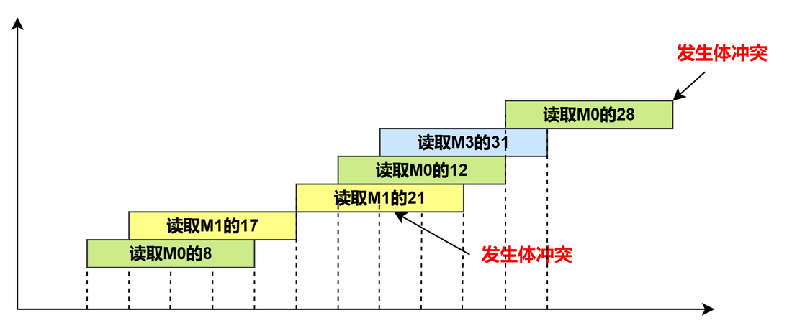
8（模块 0）。17（模块 1）。21（模块 1）。21。12（模块 0）。31（模块 3）。28（模块 0）。28。最终结论： 在这六次访存中，只有地址 21 和地址 28 在试图发出时遭遇了模块忙碌，从而发生了体冲突。
A: 160MB/S B: 40MB/S C: 128MB/S D: 320MB/S
答案：A
流水线稳定时，每隔 r(50ns) 就输出一个8B的数据。最大带宽 = 8B / 50ns = 160 MB/s。
A.高位交叉编址将地址的高位作为模块内地址，低位作为模块号。
B.低位交叉存储器能高速读写的核心原因是采用了更先进的高速SRAM存储介质。
C.当存储器芯片和总线支持突发(Burst)传送时，必须采用多模块交叉编址才能实现。
D.在满足 T（存储周期）=mτ（总线传输周期） 的理想流水线状态下，低位交叉存储器在一个完整的存储周期 T 内可向总线提供 m 个数据。
答案：D
【2012-43】(10分)假定某计算机的CPU主频为80MHz，CPI为4，平均每条指令访存1.5次，主存与Cache之间交换的块大小为16B，Cache的命中率为99%，存储器总线宽度为32位。请回答下列问题。
(1) 该计算机的MIPS数是多少？平均每秒Cache缺失的次数是多少？在不考虑DMA传送的情况下，主存带宽至少达到多少才能满足CPU的访存要求？
(2) 假定在Cache缺失的情况下访问主存时，存在0.0005%的缺页率，则CPU平均每秒产生多少次缺页异常？若页面大小为4KB，每次缺页都需要访问磁盘，访问磁盘时DMA传送采用周期挪用方式，磁盘I/O接口的数据缓冲寄存器为32位，则磁盘I/O接口平均每秒发出的DMA请求次数至少是多少？
(3) CPU和DMA控制器同时要求使用存储器总线时，哪个优先级更高？为什么？
(4) 为了提高性能，主存采用四体低位交叉存储模式，工作时每1/4个存储周期启动一个体。若每个体的存储周期为50ns，则该主存能提供的最大带宽是多少？
②计算平均每秒 Cache 缺失次数：平均每秒访存总次数 = 每秒指令数 平均每条指令访存次数 = 次。
Cache 命中率为 99%，即缺失率为 1%（0.01）；平均每秒 Cache 缺失次数 = 平均每秒访存总次数 缺失率 = 次。
③计算满足 CPU 要求的最小主存带宽： 只有在 Cache 缺失时，CPU 才会去访问主存，并且主存与 Cache 之间的数据交换是以块（Block）为单位进行的，主存带宽至少要能满足 Cache 缺失时的数据搬运需求。
主存带宽 = 每秒 Cache 缺失次数 主存块大小 = 。
所以，主存带宽至少达到 （或 4.8MB/s）。
②计算磁盘 I/O 接口平均每秒发出的 DMA 请求次数： 每次缺页需要从磁盘调入一个页面，页面大小为 4KB（）。
DMA 采用周期挪用方式，这意味着每次 DMA 请求只传送一个数据缓冲寄存器大小的数据；缓冲寄存器大小为 32 位 = 4B。
每次缺页需要的 DMA 请求次数 = 页面大小 / 缓冲寄存器大小 = 次。
平均每秒的 DMA 请求总数 = 每秒缺页次数 每次缺页的 DMA 请求数 = 1536 次。
最大带宽 = 单次提供的数据量 / 平均耗时= 。
所以，该主存能提供的最大带宽是 （或 320MB/s）。
【2013-43】(9分)某32位计算机，CPU主频为800MHz，Cache命中时的CPI为4，Cache块大小为32字节；主存采用8体交叉存储方式，每个体的存储字长为32位、存储周期是40ns；存储器总线宽度为32位，总线时钟频率为200MHz，支持突发传送总线事务。每次读突发传送总线事务的过程包括：送首地址和命令、存储器准备数据、传送数据。每次突发传送32字节，传送地址或者32位数据均需要一个总线时钟周期。请回答下列问题，要求给出理由或者计算过程。
(1) CPU和总线的时钟周期各是多少？总线的带宽(即最大数据传输率)为多少？
(2) Cache缺失时，需要用几个读突发传送总线事务来完成一个主存块的读取？
(3) 存储器总线完成一次读突发传送总线事务所需的时间是多少？
(4) 若程序BP执行过程中，共执行了100条指令，平均每条指令需要1.2次访存，Cache缺失率是5%，不考虑替换等开销，则BP的CPU执行时间是多少？
(1) CPU时钟周期 = 1 / CPU主频 = 1 / 800MHz = 1.25ns；总线时钟周期 = 1 / 总线时钟频率 = 1 / 200MHz = 5ns
总线带宽是指总线的最大数据传输率；题目已知总线宽度为32位（即4B），并且传送32位数据需要1个总线时钟周期（5ns）。
(2) Cache缺失时的突发传送次数主要看主存块大小和单次突发传送的数据量是否匹配。题目已知Cache块大小为 32字节。Cache缺失时，需要从主存中调入完整的一个主存块；题目明确指出：“每次突发传送 32字节”，因此，刚好只需要 1个 读突发传送总线事务，就能完成一个主存块的读取。
(3) 一次读突发传送总线事务的时间
总耗时 = 5ns (送地址) + 40ns (准备首数据) + 40ns (传送8个数据) = 85ns
(4) 计算程序的执行时间，思路是将时间拆分为两部分：Cache全命中时的理想执行时间 + Cache缺失带来的额外惩罚时间。
1. 理想情况下的执行时间（假设100%命中）
2. Cache缺失带来的惩罚时间
3. 最终总执行时间